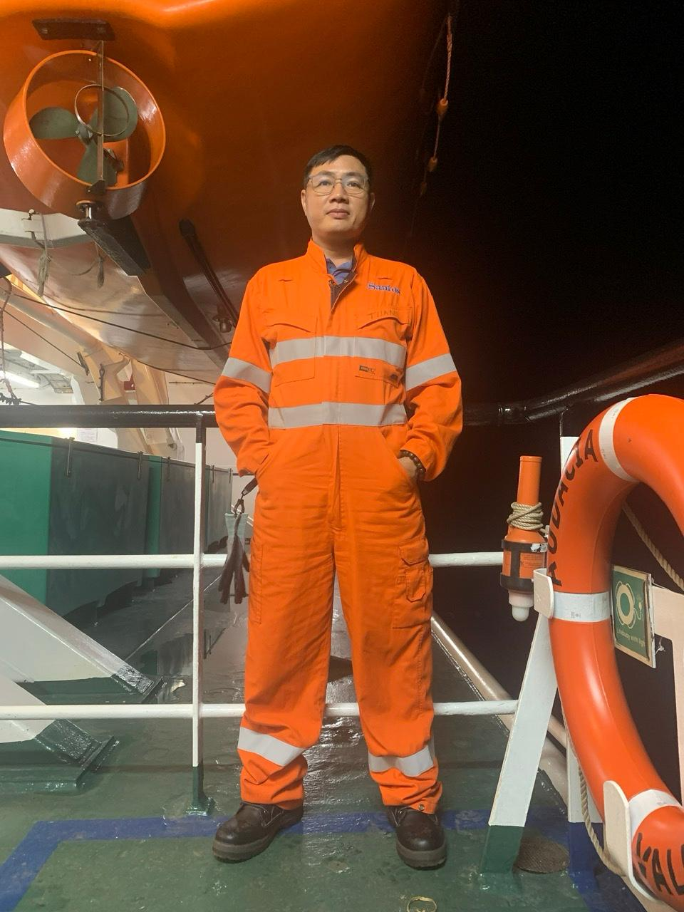
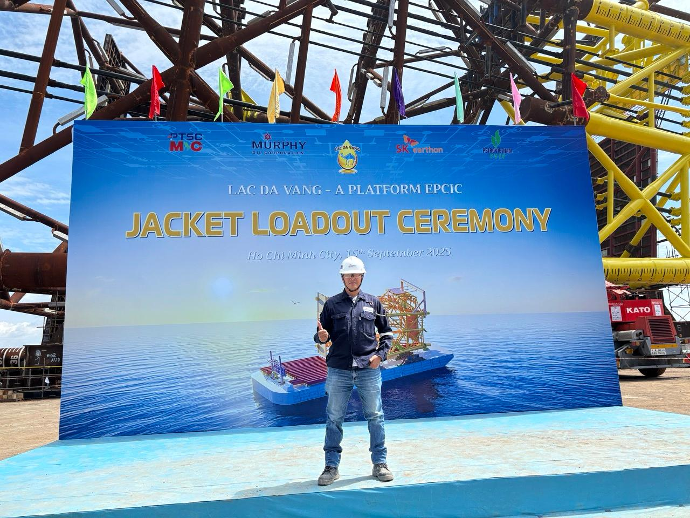
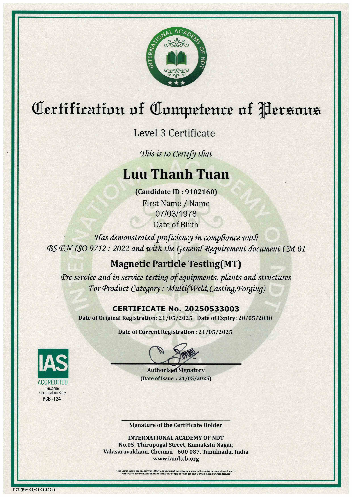
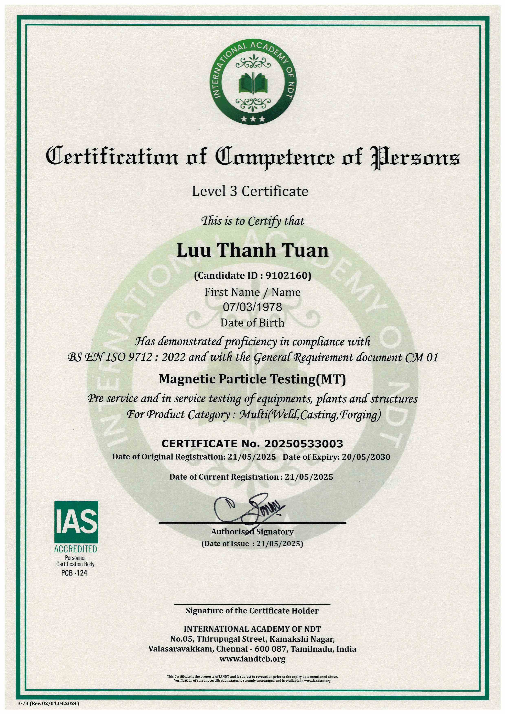
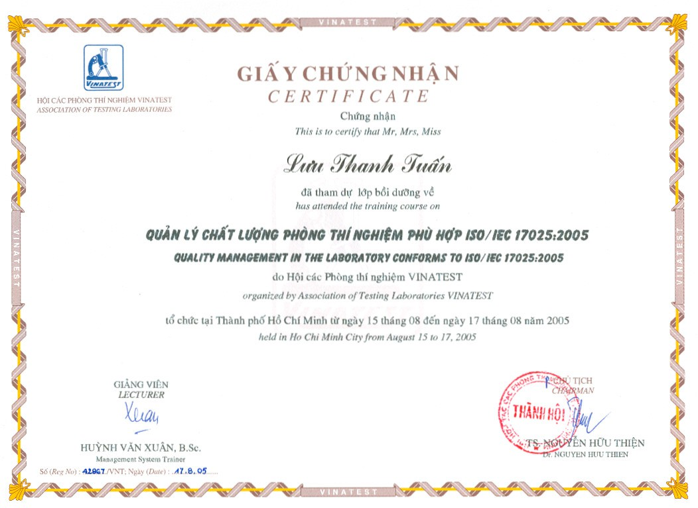
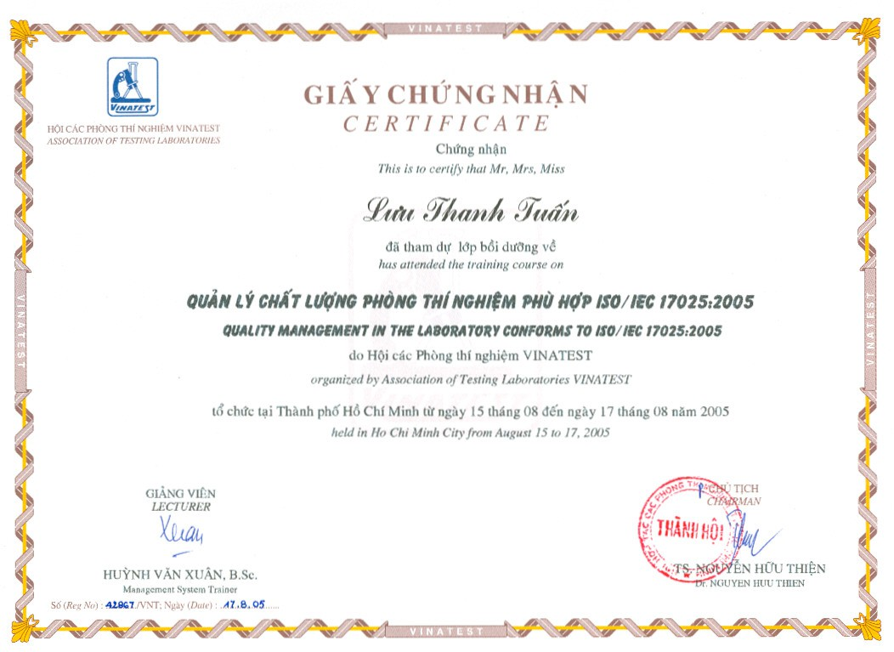

Giới thiệu
About Me
Xin chào! Tôi là Lưu Thanh Tuấn, một
QA/QC Senior Welding and NDE Inspector
với hơn 20 năm kinh nghiệm trong các dự án
Oil & Gas, Offshore, Onshore và Petrochemical.
Tôi có chuyên môn sâu trong
kiểm tra hàn, kiểm tra NDT, quản lý chất lượng và giám sát chế tạo – lắp đặt
cho các hạng mục như
pipeline, piping systems, pressure vessels, steel structures và topside modules.
Tôi từng tham gia nhiều dự án quy mô lớn tại Việt Nam và quốc tế với vai trò
QA/QC Team Leader, QA/QC Lead Inspector, Senior Welding & NDE Inspector,
làm việc trực tiếp với các chủ đầu tư và tổ chức kiểm định như
DNV, Murphy Oil, Santos, BW Offshore, Subsea 7, Fluor.
Tôi sở hữu các chứng chỉ quốc tế uy tín như
CSWIP 3.2 Senior Welding Inspector,
ISO 9712 Level 3,
ASNT Level 3,
cùng kinh nghiệm đánh giá và áp dụng các tiêu chuẩn
ASME, API, AWS, ISO, DNV
trong kiểm soát chất lượng và an toàn kỹ thuật.
Tôi là người làm việc cẩn trọng, độc lập, có tinh thần trách nhiệm cao,
giao tiếp tốt bằng tiếng Anh và sẵn sàng làm việc trong môi trường
áp lực cao, đa quốc gia và offshore.
Hello! My name is Luu Thanh Tuan. I am a
QA/QC Senior Welding and NDE Inspector
with over 20 years of extensive experience
in Oil & Gas, Offshore, Onshore, and Petrochemical projects.
I have strong expertise in
welding inspection, NDT inspection, quality management, and fabrication supervision
for
pipelines, piping systems, pressure vessels, steel structures, and topside modules.
Throughout my career, I have held key roles such as
QA/QC Team Leader, QA/QC Lead Inspector, and Senior Welding & NDE Inspector,
working closely with clients and third-party inspectors including
DNV, Murphy Oil, Santos, BW Offshore, Subsea 7, and Fluor.
I hold internationally recognized certifications such as
CSWIP 3.2 Senior Welding Inspector,
ISO 9712 Level 3,
and ASNT Level 3,
with solid knowledge and practical application of
ASME, API, AWS, ISO, and DNV codes and standards.
I am a detail-oriented, independent, and highly responsible professional
with strong English communication skills.
I am well-adapted to working in
high-pressure, multicultural, and offshore environments.

Lời muốn nói
Personal Statement
Với tôi, làm công tác chất lượng không đơn thuần là tuân thủ tiêu chuẩn,
quy trình hay hoàn tất hồ sơ kỹ thuật. Chất lượng chính là cam kết đối với
sự an toàn của con người, độ tin cậy của thiết bị và giá trị bền vững của
mỗi công trình theo thời gian.
Sau nhiều năm làm việc trong các dự án dầu khí, công nghiệp nặng và offshore,
tôi hiểu rằng một sai sót nhỏ trong kiểm soát chất lượng hôm nay có thể trở thành
rủi ro lớn trong vận hành ngày mai. Vì vậy, sự cẩn trọng, trung thực và
trách nhiệm nghề nghiệp luôn là những nguyên tắc tôi đặt lên hàng đầu
trong mọi quyết định kỹ thuật.
Tôi tin rằng kinh nghiệm không chỉ đến từ số năm làm việc,
mà đến từ thái độ nghiêm túc với từng bản vẽ, từng mối hàn,
từng báo cáo và từng chữ ký của mình.
Làm đúng ngay từ đầu, nói đúng bản chất vấn đề
và không thỏa hiệp với những rủi ro tiềm ẩn
chính là cách tôi bảo vệ uy tín cá nhân và tập thể.
Nghề kiểm tra – giám sát là một nghề thầm lặng,
nhưng giá trị của nó được thể hiện rõ nhất khi công trình
vận hành an toàn, ổn định và bền bỉ theo thời gian.
Tôi luôn trân trọng điều đó và coi mỗi dự án là
một dấu ấn trách nhiệm của chính mình.
To me, quality is not merely about compliance with standards,
procedures, or technical documentation.
It represents a professional commitment to human safety,
equipment reliability, and the long-term integrity of every project.
Through years of experience in oil & gas, heavy industry,
and offshore projects, I have learned that even a minor oversight
in quality control today can lead to significant operational risks tomorrow.
Therefore, carefulness, integrity, and professional accountability
are principles I consistently uphold in every technical decision.
I believe that true experience is not defined by the number of years,
but by one’s attitude toward each drawing, each weld,
each inspection report, and each signature.
Doing things right from the beginning, addressing issues honestly,
and never compromising on hidden risks
are how I protect both personal and organizational credibility.
Quality inspection is often a silent profession,
yet its true value is proven when facilities operate safely,
reliably, and sustainably over time.
I take pride in this responsibility and view every project
as a lasting reflection of my professional integrity.

 

 
